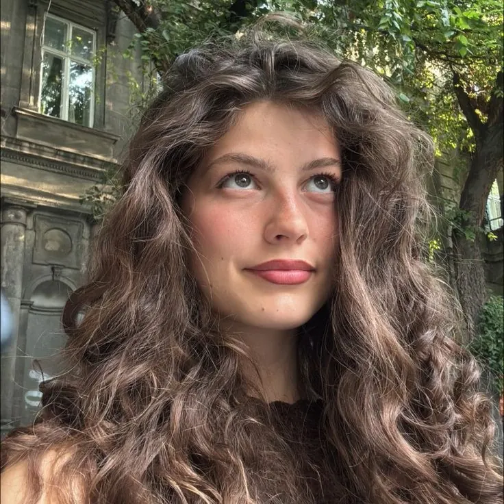

[Insira aqui uma resenha autorizada sobre Versos de Mim.]
[Origem da avaliação, se autorizada]
Em poemas e romances, Lorrane Fernandes escreve sobre memória, afeto e os recomeços que chegam sem fazer alarde.
Uma obra publicada. Duas histórias em construção.
Palavras que ficam
como flores entre páginas
Uma coletânea sobre ser, sentir e florescer. Poemas que acompanham os dias de descoberta, as saudades, as mudanças e a coragem tranquila de começar de novo.
“Cada página é um lugar para respirar com calma e reconhecer o que ainda floresce.”
Encontre a edição e as condições de compra diretamente na UICLAP.
Comprar na UICLAPUm intervalo breve para encontrar o tom destas páginas. Use o botão para ler outro poema de amostra.
Poemas de demonstração para esta página; substitua pelos textos autorizados de Versos de Mim.
Entre estações
Guardei a primavera na dobra de uma carta. O tempo abriu as mãos — e o silêncio virou jardim.
Este espaço está reservado para comentários reais, publicados com autorização.
[Insira aqui uma resenha autorizada sobre Versos de Mim.]
[Insira aqui outra impressão real de leitura.]
[Reserve este espaço para uma nova voz leitora.]
As Estações do Coração percorre quatro movimentos sazonais. As Coisas que Deixamos no Inverno é apresentado aqui por outro conjunto de personagens: os núcleos Valença, Duarte e Fagundes.
Uma história pensada em quatro movimentos: primavera, verão, outono e inverno. O tempo muda a paisagem; os sentimentos também.
Status: em construção · data prevista ainda não anunciada
Outro romance da autora, apresentado por personagens dos núcleos Valença, Duarte e Fagundes. Uma história com vínculos e perguntas que serão revelados no tempo certo.
Status: em desenvolvimento · data prevista ainda não anunciada
O tempo de abrir espaço para o que chega.
Quando a vida acontece em plena luz.
O que parte também revela o que permanece.
O silêncio prepara o próximo movimento.
As etapas indicam a estrutura temática do projeto; datas de publicação serão anunciadas quando estiverem definidas.
Toque em um cartão para abrir sua ficha. Os papéis e as descrições aguardam os detalhes oficiais da história.
Um dos nomes que compõem a família Valença.
Uma personagem do núcleo Fagundes.
Uma das histórias que pertencem ao núcleo Duarte.
Um dos nomes que compõem a família Valença.
Um dos nomes que compõem a família Duarte.

Uma das histórias que pertencem ao núcleo Valença.
Um dos nomes que compõem a família Valença.
As frases são identificadores provisórios, não revelam relações ou características ainda não confirmadas.
Os núcleos estão organizados pelos sobrenomes conhecidos. O vínculo entre as famílias permanece a ser revelado pela autora.
Dona Celeste Fagundes aparece em um núcleo próprio; seu vínculo com as demais famílias será apresentado no romance.
Há lugares que parecem guardar o som de muitas conversas. Em Dublin, uma fachada vermelha atravessa a chuva e permanece acesa na memória de quem passa.
“A cidade seguia apressada. Eu, pela primeira vez, não tinha vontade de chegar antes de mim.”Fragmento original para esta página; não é um trecho literal do manuscrito.

“O que floresce em nós também merece um lugar na página.”
Lorrane Fernandes · escritora